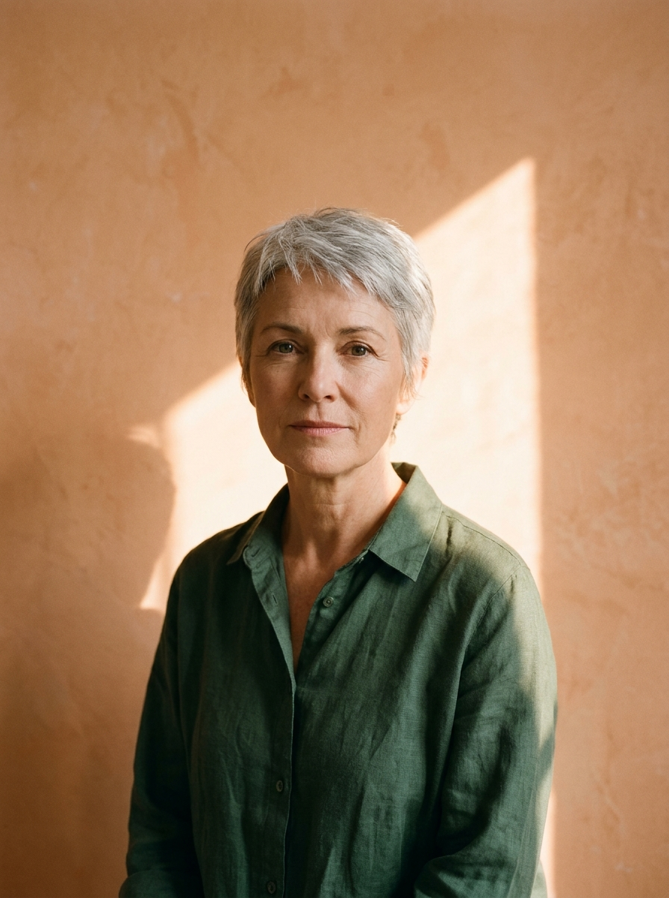
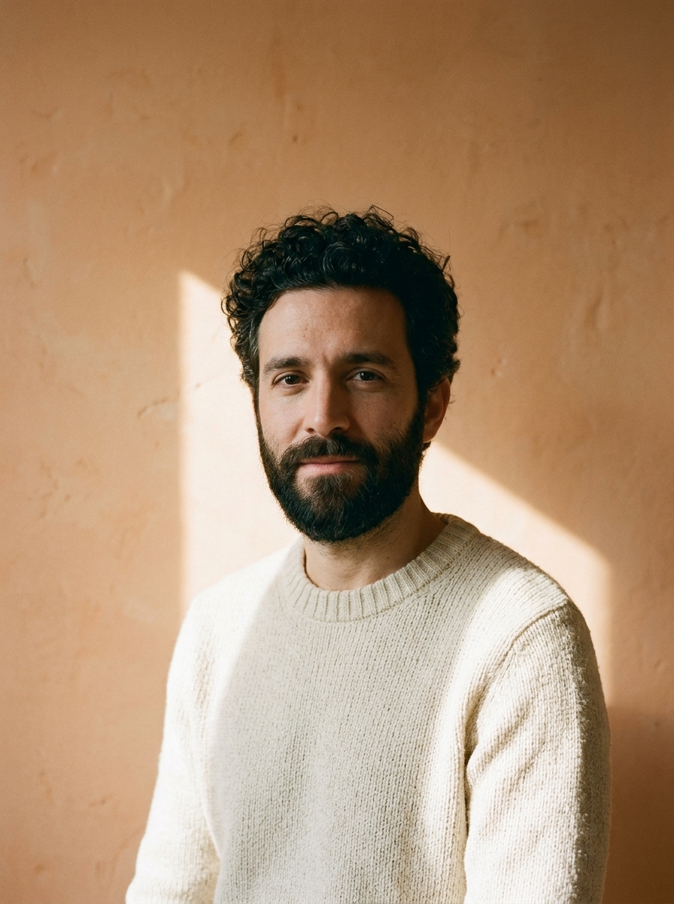
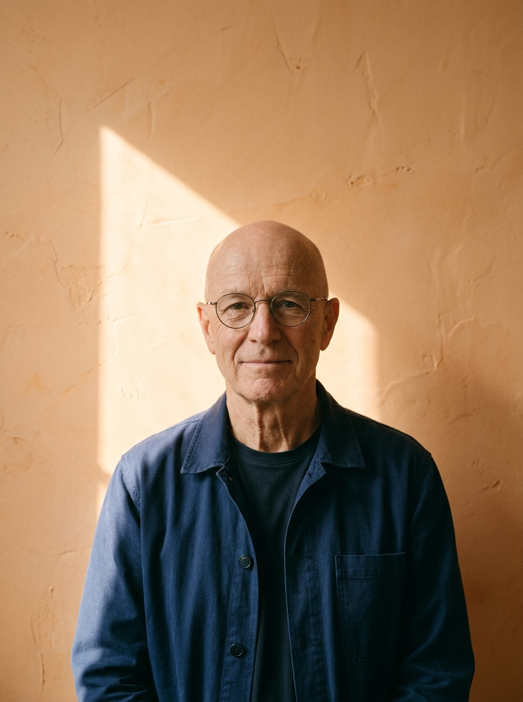
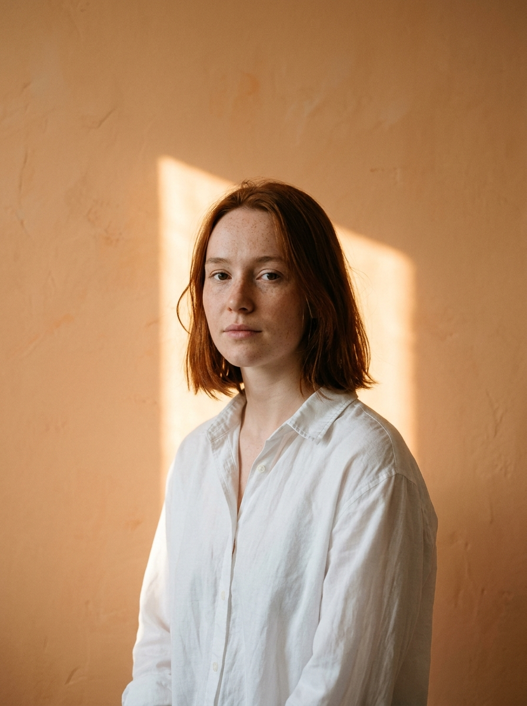
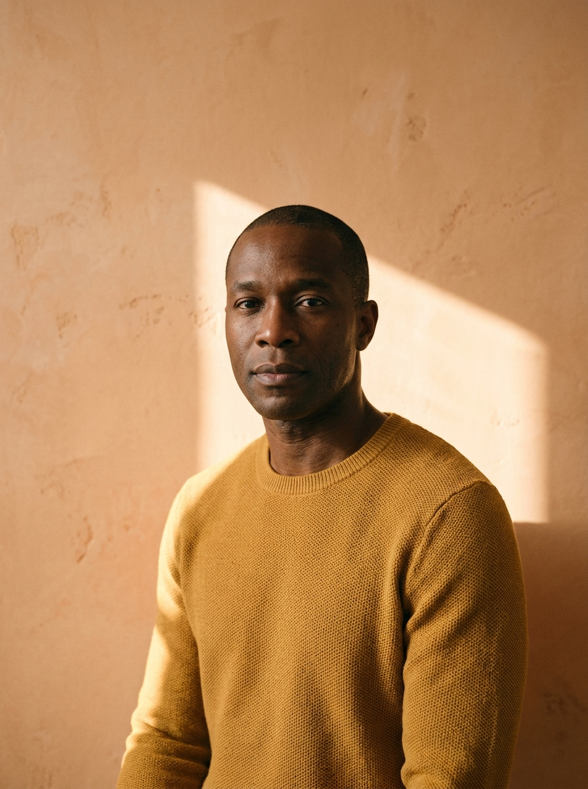
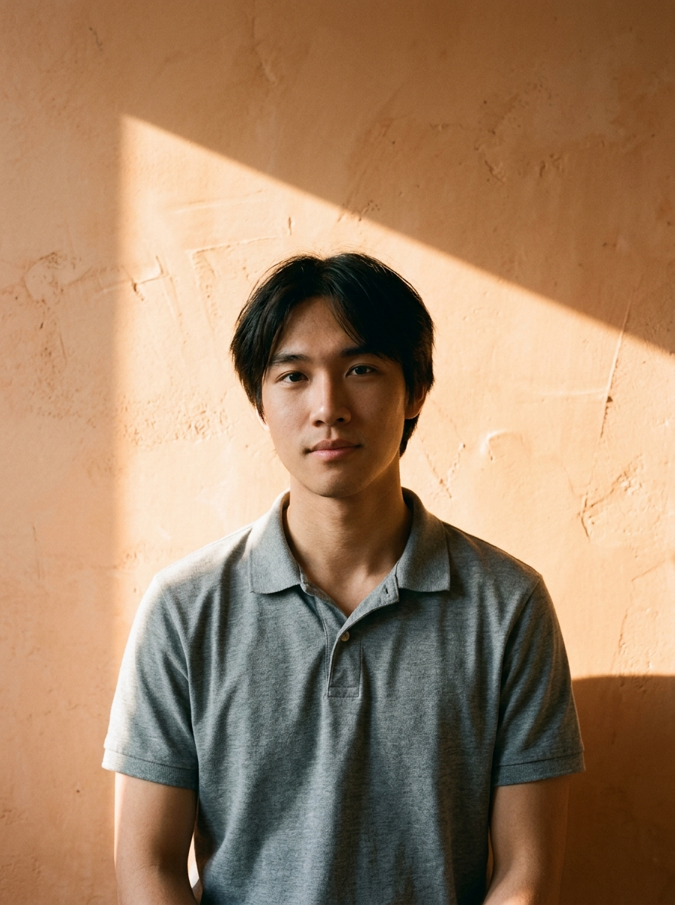
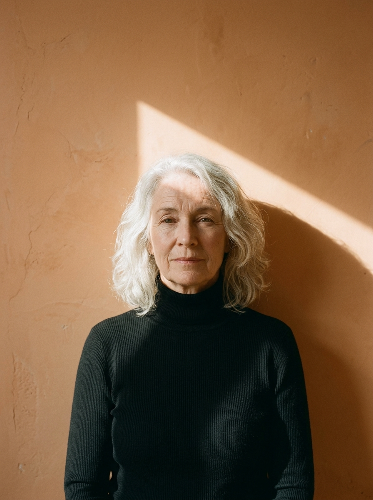
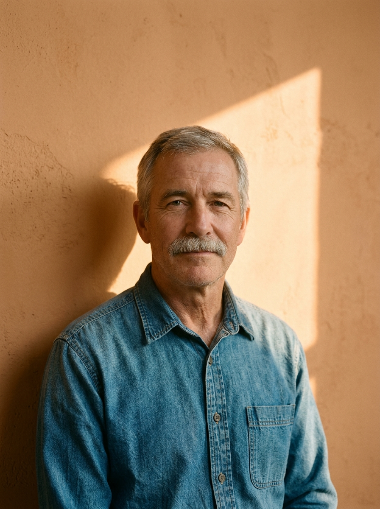
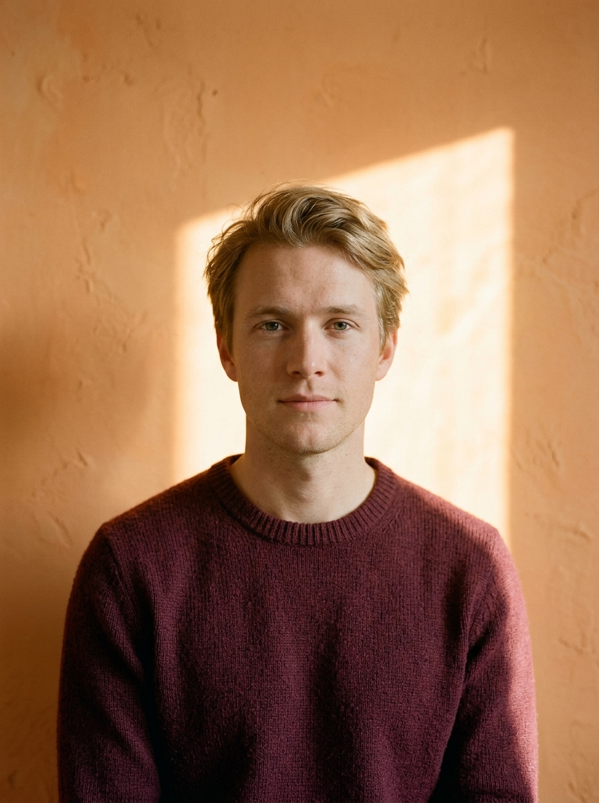

Surveyors, agents and one photographer, who would rather wait for the sun than switch on a lamp
How we
think of it
Most of what is said about a house can be changed. Kitchens are replaced, walls come down, gardens grow. The way a building sits under the sun stays. So we begin there, with a compass on the sill, and only then do we talk about the rest of it.
A working day
The people
with the keys
Twelve of us, in two cities and on one island. Everybody does visits, including the accounts.
Each portrait was taken in the same window at the end of the same day.









Rules of
the house
A compass, always
The deed is wrong about one time in six.
No lamps in photographs
Only what comes through the window.
Three visits
One early, one late, one when you would rather not.
Say what is in the way
Trees, towers, next year's building permit.
The worst hour, in writing
It goes on the same page as the best.
Never call a house bright
Give the number of hours and stop talking.
Shutters first
Open them, step back, and leave the room quiet.
Ask who sleeps late
It decides which side of the building to look at.